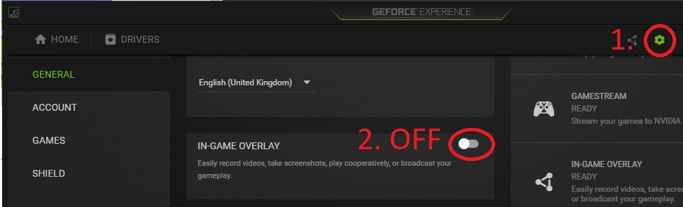
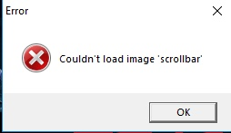
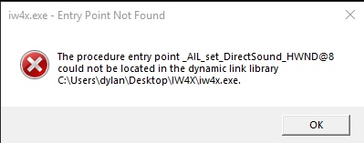
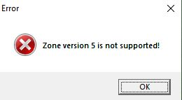
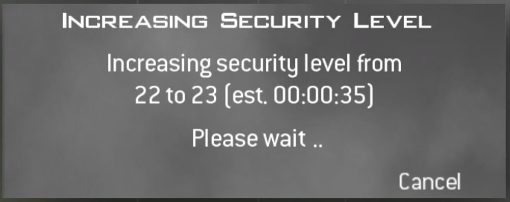
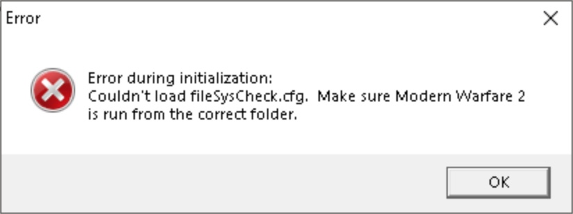
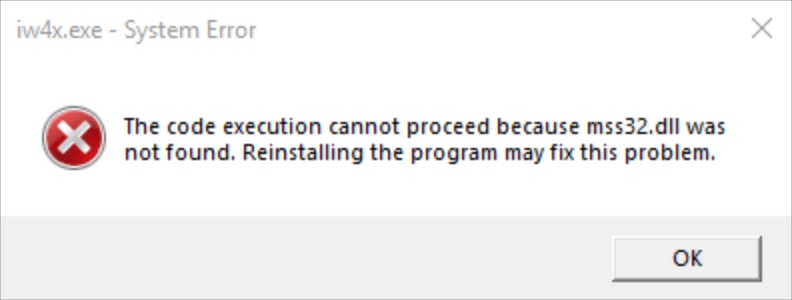
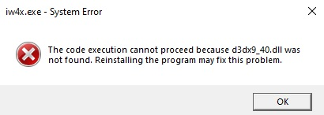

Black Screen / Not responding on startup
Problem description:
If you've been experiencing black screens or IW4x not responding on starting up IW4x, try one or more of the following methods:
Solution(s):
- If you have a Nvidia GPU, disable the overlay (see picture). Disable any other overlays as well (Discord, FPS Counters, Recorders, Steam, etc.)
- Rightclick iw4x.exe, click Properties, go to the Compatibility tab and enable compatibility mode for Windows 8./li>
- Turn off fullscreen mode by editing /players/iw4x_config.cfg and changing the line that says set r_fullscreen "1" to set r_fullscreen "0" and set r_noborder "0" to set r_noborder "1". Alternatively, run this batch file in your game folder: fullscreen_0.bat
- Disable DEP, run this batch file as admin: dep_disabler.bat
Problem description:
This is a rare issue that causes the game to crash. It seems to be related to UPNP on your router.
Solution(s):
- You can try to disable UPNP on your router via its web panel (Consult your ISP or router documentation on how to access your router's web panel).
- Another potential solution is to update your router's firmware (Outdated firmware may be the cause)
- Simply restarting your router may resolve the issue
Problem description:
This error has many causes including antivirus false positives and missing/damaged dependant DLLs.
Solution(s):
Failed to download Mod List
Problem description:
This is a fairly common issue that occurs to servers with a mod loaded, usually after a while of uptime. This issue is related to the server itself.
Solution(s):
- Contact the server owner and inform them of the problem (Suggest a server restart).
XUID doesn't match the certificate
Problem description:
There are two known reasons why this issue will occur, but it relates to the guid.dat (Your unique identifier). First being multiple instances of iw4x running, the second reason being you took another PC's guid.dat resulting in the private key not matching the public key.
Solution(s):
- Make sure there isn't another instance of iw4x running (Check task manager or simply reboot your PC)
- Close IW4x then delete the file guid.dat found inside your players folder Call of Duty Modern Warfare 2/players/guid.dat then simply restart your game
Couldn't load image 'AnyImageNameHere'
Problem description:
This is caused by the game trying to load a referenced image that doesn't exist or is corrupted. This is almost always caused by a broken / incomplete game install.
Solution(s):
- Reinstall IW4x. We suggest the all in one pack for convience. It can be found here: Downloads Page
Problem description:
You see very little servers compared to other players. This issue can occur because of: an inadequate router, over-restrictive firewall, or simply enabled server filters
Solution(s):
- Open the ingame console and check the values for net_serverQueryLimit and net_serverFrames
- Lower them both, step by step, until the amount of servers rise. (Alternatively, set them to their minimum and increase them one by one until your server amount goes down.)
Problem description:
You see no servers on the serverlist at all. There are again many reasons for this problem from network related issues to having an outdated client, follow the proceeding steps to resolve the issue.
Solution(s):
- Make sure your version of IW4x is up to date, the current latest version is v0.6.0. If you are not on the latest version, please visit our Downloads Page.
- If you are on the latest version but are still having issue then try resetting your filters and making sure that you aren't filtering by a specific game mode. Also make sure that the source is set to Internet, not Local or Favourites.
- If you still see no servers, please try to direct-connect to a server by entering connect emosewaj.eu into the in-game console. If the connection timed out, something is blocking IW4x's connection to the internet on your end. Please check Antivirus, Firewall and allow IW4x in the whitelists. You can also try restarting your router.
Entry Point Not Found - (DirectSound)
Problem description:
This error means you have attempted to download a incompatible DLL version (mss32.dll). This will not work and is not recommended due to the large risk of virus infection. If you did this in the first place due to a missing DLL error then it's highly likely that your game install is incomplete as the mss32.dll is part of the base game.
Solution(s):
- Reinstall everything, I suggest the all in one pack for convience, it can be found here: Download Center
Zone Version is not supported
Problem description:
This is caused by mismatched game files and binaries. This occurs with corrupt / broken / incomplete game installs
Solution(s):
- Reinstall everything, I suggest the all in one pack for convience, it can be found here: Download Center
My controller isn't working on IW4x
Problem description:
Your controller isn't registering any input in-game. This problem occurs because MW2 on PC does not natively support controllers.
Solution(s):
Stuck on Increasing Security Level
Problem description:
You have been stuck on this screen for a while and or the remaining timer (est) is not accurate. This is not an issue and is actually part of IW4x's built in security mechanism that generates you a unique identifier (GUID).
Note: Cancelling the message will only waste time, be patient while it completes.
The time it takes to finish this process is determined by both the security level (Higher = Longer) and your PC's hardware, low end PC's will take considerbly longer to complete this process. Security level increases are usually only a one time event so don't worry this won't happen everytime you join a server.
Solution(s):
- Wait patiently, grab yourself a cup of tea while you wait
Problem description:
The menu stops working as expected, e.g. certain sub menus such as selecting an attachment stop working not allowing you to click inside them. Another issue is upon disconnecting from a match you may encounter a black screen with no menu but the music is still playing and you can see the version number for iw4x and can open/close the console still. This is a problem that occurs randomly and breaks or partially breaks the in-game menus, the solution is simple and quick and merly reloads the menus.
Solution(s):
- Open the in-game console via the tilde key on your keyboard and enter the following command /reloadmenus
- Another option is to simply close the game and relaunch it
Error during initialization: Couldn't load fileSysCheck.cfg
Problem description:
You get this error when trying to launch iw4x or an iw4x server. This problem is caused by incomplete / corrupt base game files resulting in the game being unable to locate a core file required to start the game.
Solution(s):
- Reinstall the base game, I suggest the all in one pack for convience, it can be found here:
Download Center
System Error: mss32.dll was not found
Problem description:
You get this error when trying to launch iw4x or an iw4x server. This problem is caused by incomplete / corrupt base game files resulting in the game being unable to locate a core file (DLL) required to start the game.
Note: DO NOT download this dll loose from google, this will likely not solve the issue and cause more issues / run you the risk of infecting your PC with malware.
Solution(s):
- Reinstall the base game, I suggest the all in one pack for convience, it can be found here:
Download Center
System Error: d3dx9_40.dll was not found
Problem description:
You get this error when trying to launch iw4x. This problem is caused by your computer not having DirectX 9.0 installed, DirectX 9.0 is a requirement to run the game.
Note: DO NOT download this dll loose from google, this will likely not solve the issue and cause more issues / run you the risk of infecting your PC with malware.
Solution(s):
- Install DirectX 9.0, you can do so from the pre-packed installer that comes with MW2, It's located at:
Call of Duty Modern Warfare 2\Redist\DirectX\DXSETUP.exe, simply run the installer and restart your PC to resolve the error. If you don't have the redist folder you can download the installer manually from here:
DirectX 9.0c Download
System Error: binkw32.dll was not found
Problem description:
You get this error when trying to launch iw4x or an iw4x server. This problem is caused by incomplete / corrupt base game files resulting in the game being unable to locate a core file (DLL) required to start the game.
Note: DO NOT download this dll loose from google, this will likely not solve the issue and cause more issues / run you the risk of infecting your PC with malware.
Solution(s):
- Reinstall the base game, I suggest the all in one pack for convience, it can be found here:
Download Center
Problem description:
I am not playing on a hardcore server yet my crosshair is missing?! This problem occurs when the config value that determines to show or hide the crosshair is disabled, this could have been done by you the user via the console or editing the .cfg file or the more likely cause is a poorly coded mod forcefully disabled it. Thankfully you can simply re-enable this config value via the console or editing your cfg file.
Solution(s):
- Open the in-game console via the tilde key on your keyboard and enter the following command /ui_drawcrosshair 1
- Alternatively you can manually edit your configuration file (iw4x_config.cfg) located in players folder of your MW2 folder and edit the line /ui_drawcrosshair and set it's value to 1
Problem description:
I am not playing on a hardcore server yet my minimap is partly or fully missing?! This problem occurs when the config value that determines to show or hide the minimap is disabled, this could have been done by you the user via the console or editing the .cfg file or the more likely cause is a poorly coded mod forcefully disabled it. Thankfully you can simply re-enable this config value via the console or editing your cfg file.
Solution(s):
- Open the in-game console via the tilde key on your keyboard and enter the following command /hud_enable 1
- Alternatively you can manually edit your configuration file (iw4x_config.cfg) located in players folder of your MW2 folder and edit the line hud_enable and set it's value to 1
FPS drops, choppy frames and ghosting
Problem description:
My FPS is dropping and gameplay is choppy even though my PC is high enough spec to easily run the game. This happens to a few users and is generally related to some other software running on you system.
Solution(s):
- Disable the nvidia overlay
- Disable any recording software / overlays / external fps counters
- If you have IW4x set to fullscreen mode try switching it to borderless windowed mode
- Restart your PC (The good old turn it off and back on method)
Demo playback - Lost connection to host
Problem description:
I am getting the error message "Lost connection to host" when playing back my demo clip. This occurs after my character opens a laptop based killstreak such as a chopper gunner.
Solution(s):
- Sadly there is no solution to this issue due the demo code in IW4 being experimental and not compatible with laptop based killstreaks. To read more on this issue see the github issue report.
- The only workaround is to not use laptop based killstreaks if you plan to playback your gameplay without issue.
Stuck on awaiting gamestate
Problem description:
This issue can occur both in private matches and in public matches. You may find yourself stuck on the loading map screen with the message "Awaiting Gamestate...".
Solution(s):
- If you are recieving this issue in a private match the cause is the fact that your in-game name has invalid characters. Please make sure to remove any symbols / non english characters.
- If you are recieving this issue in a public match the issue is related to your network. Try restarting your pc and router, failing that try iw4x at a friends house or on an internet hotspot to determine if it's your home connection that's at fault.
Large steam recorded hours
Problem description:
This issue occurs due to an update to the steam API IW4x uses to enable steam integration, making it incompatible and wrongly record time played.
Solution(s):
- The simplest soltution is to exit steam prior to lauching IW4x, IW4x will see steam is not running and not attempt to launch steam integration. In doing so preventing MW2 hours being recorded.
- The other solution is to launch IW4x with the -nosteam parameter. This will disable steam intergration even if steam is open. To add the parameter right click IW4x.exe and select Create Shortcut. This will create a new file called 'iw4x.exe - Shortcut' right click this new file and select properties. Then in the target field add the -nosteam parameter. Example target field: C:\Games\MW2\iw4x.exe -nosteam